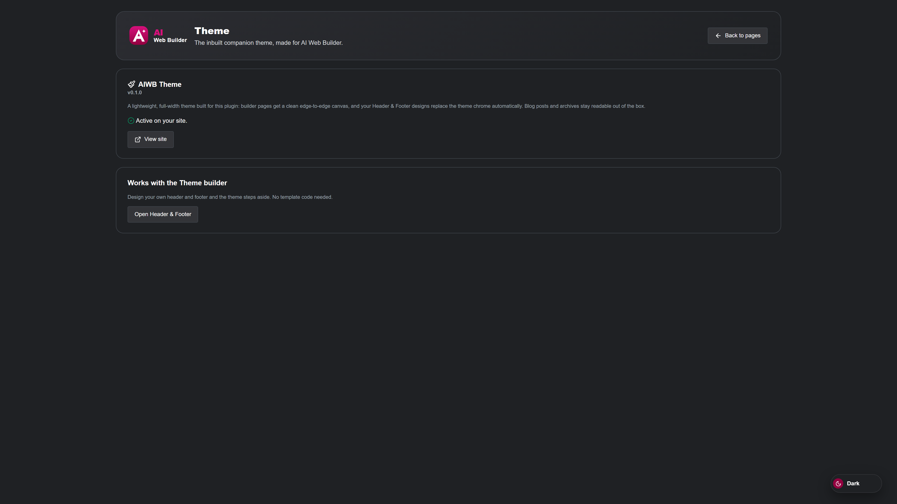

Reusable parts
Design a header and footer once, then assign them across pages. These are theme parts inside Elementiq, built with the same Design and Studio editors you use for pages. They live on your WordPress site.

Theme parts inside the Elementiq WordPress menu.
Build navigation, logo, and footer content once. Assign them site-wide so every page shares the same chrome.
Optional parts for a site-wide popup, a single post or product template, and list views such as a blog.
Open a part the same way you open a page. Use Design to drag widgets, or Studio to describe the layout in chat.
Choose full width, canvas, or theme boxed for new pages so builder pages sit cleanly in your theme.